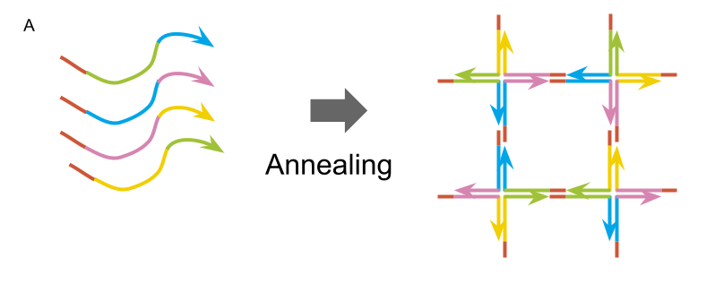
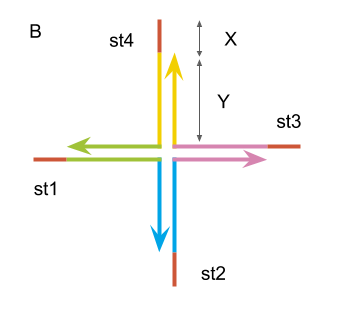
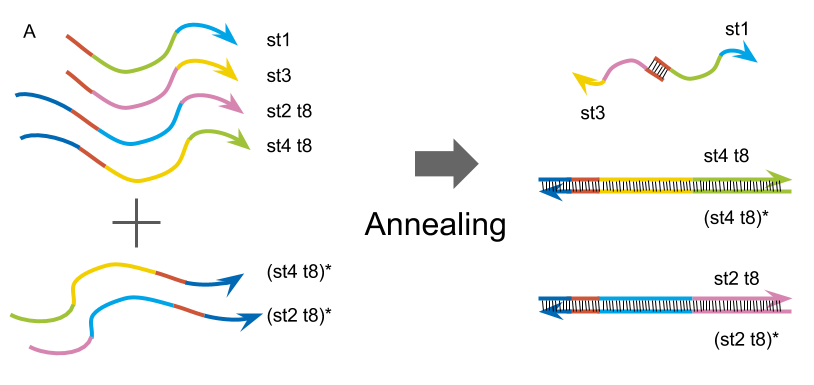
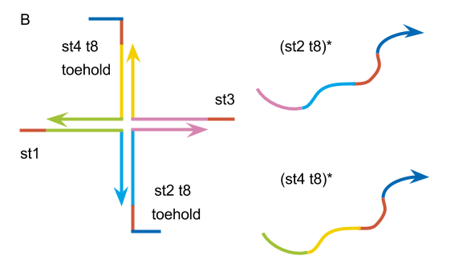

Design
複数のDNA配列が相補的に結合し立体構造をとることによってできるDNAハイドロゲルのゲル化ー液体化条件の制御方法は様々に考えられている。


st1: 5’- TGGATCCAGTTTGTTATCGCAGGAGCGTCGGTATTCAAA -3’
st2: 5’- TGGATCCAGTTTGAATACCGACGCCACGACCTAATCTTA -3’
st3: 5’- TGGATCCAGTAAGATTAGGTCGTGATGGTGAAATGTAAA -3’
st4: 5’- TGGATCCAGTTTACATTTCACCATTCCTGCGATAACAAA -3’
Fig.1: 基本となるDNAハイドロゲルの構造:
(A)DNA配列が、アニーリング後ゲルを形成するときの模式図。(B)DNAハイドロゲルの基本構造。
私たちは、まずは参考文献から基本となるDNAハイドロゲル[1]を作成し、その後配列を加えることでゲルの状態と液体の状態を制御する。Fig 1に示される9塩基の粘着末端によってDNAハイドロゲルの基本となるX motif同士が結合し、隣り合った配列との結合する塩基数Yは15塩基としてDNAハイドロゲルを設計した。このデザインでは、配列の全ての塩基が相補的に結合する。
次に、ゲルの形状の操作をするため、St2とSt4について基本のDNAハイドロゲルの配列から5’末端側を8塩基延長し、延長した配列に相補的に結合する配列を設計した。


st2 t8: 5’- CACTCTTCTGGATCCAGTTTGAATACCGACGCCACGACCTAATCTTA -3’
(st2 t8)*: 5’- TAAGATTAGGTCGTGGCGTCGGTATTCAAACTGGATCCAGAAGAGTG -3’
st4 t8: 5’- CACTCTTCTGAATCCAGTTTACATTTCACCATTCCTGCGATAACAAA -3’
(st4 t8)*: 5’- TTTGTTATCGCAGGAATGGTGAAATGTAAACTGGATCCAGAAGAGTG -3’
Fig.2: 8塩基延長した配列を持つDNAハイドロゲル
(A)ゲルが液体化するときのDNA配列の様子の模式図。(B)8塩基延長した配列の構造。
(st2 t8)*は、DNAハイドロゲルを形成する配列に加えて高温の状態からannealingすることで、st2 t8に結合しする。DNAハイドロゲルのXモチーフを形成する際に(st2 t8)*によってst2 t8が消費されるので、st2 t8がかけたXモチーフが形成されることが期待される。同時に、st4 t8についても(st4 t8)*を溶液中に加えannealingすると、st4 t8が(st4 t8)*によって消費されるので、st4 t8がないXモチーフになり、ゲルが形成されず液体になることが予想される。我々は、この設計によってDNAハイドロゲルのゲル化ー液体化の制御を実現できると考えている。
reference
[1] Kandatsu, D. et al. “Reversible Gel-Sol Transition of a Photo-Responsiv\ e DNA Gel.” Chem Bio Chem 17, 2016, 1118-1121